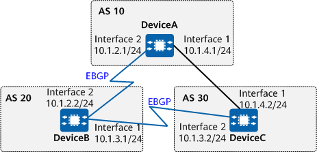

Example for Configuring AS_Path Filters to Control Route Advertisement
Networking Requirements
Enterprises A, B, and C belong to different ASs, and enterprise B's network communicates with the networks of the other two enterprises through EBGP connections. Due to competition between enterprises A and C, they require that the routes that they advertise to enterprise B should not be learned by each other in order to improve their own network security. To meet this requirement, configure AS_Path filters on enterprise B's network.
On the network shown in Figure 1, EBGP connections are established between DeviceA and DeviceB, and between DeviceB and DeviceC. To disable the device in AS 10 from communicating with the device in AS 30, configure AS_Path filters on DeviceB to stop DeviceB from advertising the routes of AS 30 to the device in AS 10 as well as the routes of AS 10 to the device in AS 30. This ensures that AS 10 and AS 30 are isolated from each other.

In this example, interface 1 and interface 2 represent 10GE0/0/1 and 10GE0/0/2, respectively.

To complete the configuration, you need the following data:
Precautions
During the configuration, note the following:
The relationship between multiple filtering rules in the same filter is OR.
- To improve security, you are advised to deploy BGP security measures. For details, see "Configuring BGP Authentication." Keychain authentication is used as an example. For details, see Example for Configuring Keychain Authentication for BGP.
Procedure
- Assign an IP address to each interface involved. For detailed configurations, see Configuration Scripts.
- Configure EBGP.
# Configure DeviceA.
[DeviceA] bgp 10 [DeviceA-bgp] router-id 1.1.1.1 [DeviceA-bgp] peer 10.1.2.2 as-number 20 [DeviceA-bgp] import-route direct [DeviceA-bgp] quit
# Configure DeviceB.
[DeviceB] bgp 20 [DeviceB-bgp] router-id 2.2.2.2 [DeviceB-bgp] peer 10.1.2.1 as-number 10 [DeviceB-bgp] peer 10.1.3.2 as-number 30 [DeviceB-bgp] import-route direct [DeviceB-bgp] quit
# Configure DeviceC.
[DeviceC] bgp 30 [DeviceC-bgp] router-id 3.3.3.3 [DeviceC-bgp] peer 10.1.3.1 as-number 20 [DeviceC-bgp] import-route direct [DeviceC-bgp] quit
# Check the routing table on DeviceB. This example uses the routes advertised by DeviceB to DeviceC. The command output shows that DeviceB has advertised the routes destined for the direct network segment between DeviceA and DeviceC.
[DeviceB] display bgp routing-table peer 10.1.3.2 advertised-routes BGP Local router ID is 2.2.2.2 Status codes: * - valid, > - best, d - damped, x - best external, a - add path, h - history, i - internal, s - suppressed, S - Stale Origin : i - IGP, e - EGP, ? - incomplete RPKI validation codes: V - valid, I - invalid, N - not-found Total Number of Routes: 9 Network NextHop MED LocPrf PrefVal Path/Ogn *> 10.1.2.0 0.0.0.0 0 0 ? *> 10.1.2.1/32 0.0.0.0 0 0 ? *> 10.1.2.2/32 10.1.2.1 0 0 10? *> 10.1.3.0 0.0.0.0 0 0 ? *> 10.1.3.1/32 10.1.3.2 0 0 30? *> 10.1.3.2/32 0.0.0.0 0 0 ? *> 10.1.4.0 10.1.2.1 0 0 10? *> 10.1.4.1/32 10.1.3.2 0 0 30? *> 10.1.4.2/32 10.1.2.1 0 0 10?
Check the routing table of DeviceC. The command output shows that DeviceC has learned both routes advertised by DeviceB.
[DeviceC] display bgp routing-table BGP Local router ID is 3.3.3.3 Status codes: * - valid, > - best, d - damped, x - best external, a - add path, h - history, i - internal, s - suppressed, S - Stale Origin : i - IGP, e - EGP, ? - incomplete RPKI validation codes: V - valid, I - invalid, N - not-found Total Number of Routes: 18 Network NextHop MED LocPrf PrefVal Path/Ogn *> 10.1.2.0 10.1.4.1 0 0 10? * 10.1.3.1 0 0 20? *> 10.1.2.1/32 10.1.3.1 0 0 20? * 10.1.4.1 0 10 20? *> 10.1.2.2/32 10.1.4.1 0 0 10? * 10.1.3.1 0 20 10? *> 10.1.3.0 0.0.0.0 0 0 ? * 10.1.3.1 0 0 20? * 10.1.4.1 0 10 20? *> 10.1.3.1/32 0.0.0.0 0 0 ? *> 10.1.3.2/32 10.1.3.1 0 0 20? * 10.1.4.1 0 10 20? *> 10.1.4.0 0.0.0.0 0 0 ? * 10.1.4.1 0 0 10? * 10.1.3.1 0 20 10? *> 10.1.4.1/32 0.0.0.0 0 0 ? *> 10.1.4.2/32 10.1.4.1 0 0 10? * 10.1.3.1 0 20 10?
- Configure AS_Path filters on DeviceB and apply them to the routes that DeviceB will advertise to specified peers.
# Create AS_Path filter 1 to deny the routes carrying AS 30. The regular expression "_30_" indicates any AS_Path list that contains AS 30, and ".*" matches any character.
[DeviceB] ip as-path-filter 1 deny _30_ [DeviceB] ip as-path-filter 1 permit .*
# Create AS_Path filter 2 to deny the routes carrying AS 10. The regular expression "_10_" indicates any AS_Path list that contains AS 10, and ".*" matches any character.
[DeviceB] ip as-path-filter 2 deny _10_ [DeviceB] ip as-path-filter 2 permit .*
# Apply each AS_Path filter to the routes that DeviceB will advertise to a specified peer.
[DeviceB] bgp 20 [DeviceB-bgp] peer 10.1.2.1 as-path-filter 1 export [DeviceB-bgp] peer 10.1.3.2 as-path-filter 2 export [DeviceB-bgp] quit
Verifying the Configuration
# Check information about the routes that DeviceB has advertised to a specified peer in the BGP routing table. The command output shows that DeviceB does not advertise the routes to the network segment between DeviceA and DeviceC. This example uses the routes advertised by DeviceB to DeviceC.
<DeviceB> display bgp routing-table peer 10.1.3.2 advertised-routes BGP Local router ID is 2.2.2.2 Status codes: * - valid, > - best, d - damped, x - best external, a - add path, h - history, i - internal, s - suppressed, S - Stale Origin : i - IGP, e - EGP, ? - incomplete RPKI validation codes: V - valid, I - invalid, N - not-found Total Number of Routes: 6 Network NextHop MED LocPrf PrefVal Path/Ogn *> 10.1.2.0 0.0.0.0 0 0 ? *> 10.1.2.1/32 0.0.0.0 0 0 ? *> 10.1.3.0 0.0.0.0 0 0 ? *> 10.1.3.1/32 10.1.3.2 0 0 30? *> 10.1.3.2/32 0.0.0.0 0 0 ? *> 10.1.4.1/32 10.1.3.2 0 0 30?
# Check the BGP routing table of DeviceC. The command output shows that DeviceC does not have these routes either.
<DeviceC> display bgp routing-table BGP Local router ID is 3.3.3.3 Status codes: * - valid, > - best, d - damped, x - best external, a - add path, h - history, i - internal, s - suppressed, S - Stale Origin : i - IGP, e - EGP, ? - incomplete RPKI validation codes: V - valid, I - invalid, N - not-found Total Number of Routes: 15 Network NextHop MED LocPrf PrefVal Path/Ogn *> 10.1.2.0 10.1.4.1 0 0 10? * 10.1.3.1 0 0 20? *> 10.1.2.1/32 10.1.3.1 0 0 20? * 10.1.4.1 0 10 20? *> 10.1.2.2/32 10.1.4.1 0 0 10? *> 10.1.3.0 0.0.0.0 0 0 ? * 10.1.3.1 0 0 20? * 10.1.4.1 0 10 20? *> 10.1.3.1/32 0.0.0.0 0 0 ? *> 10.1.3.2/32 10.1.3.1 0 0 20? * 10.1.4.1 0 10 20? *> 10.1.4.0 0.0.0.0 0 0 ? * 10.1.4.1 0 0 10? *> 10.1.4.1/32 0.0.0.0 0 0 ? *> 10.1.4.2/32 10.1.4.1 0 0 10?
# Check information about the routes that DeviceB has advertised to a specified peer in the BGP routing table. The command output shows that DeviceB does not advertise the routes to the network segment between DeviceA and DeviceC. This example uses the routes advertised by DeviceB to DeviceA.
<DeviceB> display bgp routing-table peer 10.1.2.1 advertised-routes BGP Local router ID is 2.2.2.2 Status codes: * - valid, > - best, d - damped, x - best external, a - add path, h - history, i - internal, s - suppressed, S - Stale Origin : i - IGP, e - EGP, ? - incomplete RPKI validation codes: V - valid, I - invalid, N - not-found Total Number of Routes: 4 Network NextHop MED LocPrf PrefVal Path/Ogn *> 10.1.2.0 0.0.0.0 0 0 ? *> 10.1.2.1/32 0.0.0.0 0 0 ? *> 10.1.2.2/32 10.1.2.1 0 0 10? *> 10.1.3.0 0.0.0.0 0 0 ? *> 10.1.3.2/32 0.0.0.0 0 0 ? *> 10.1.4.0 10.1.2.1 0 0 10? *> 10.1.4.2/32 10.1.2.1 0 0 10?
# Check the BGP routing table of DeviceA. The command output shows that DeviceA does not have these routes either.
<DeviceA> display bgp routing-table BGP Local router ID is 1.1.1.1 Status codes: * - valid, > - best, d - damped, x - best external, a - add path, h - history, i - internal, s - suppressed, S - Stale Origin : i - IGP, e - EGP, ? - incomplete RPKI validation codes: V - valid, I - invalid, N - not-found Total Number of Routes: 14 Network NextHop MED LocPrf PrefVal Path/Ogn *> 10.1.2.0 0.0.0.0 0 0 ? * 10.1.2.2 0 0 20? *> 10.1.2.1/32 10.1.2.2 0 0 20? * 10.1.4.2 0 30 20? *> 10.1.2.2/32 0.0.0.0 0 0 ? *> 10.1.3.0 10.1.2.2 0 0 20? * 10.1.4.2 0 0 30? *> 10.1.3.1/32 10.1.4.2 0 0 30? *> 10.1.3.2/32 10.1.2.2 0 0 20? * 10.1.4.2 0 30 20? *> 10.1.4.0 0.0.0.0 0 0 ? * 10.1.4.2 0 0 30? *> 10.1.4.1/32 10.1.4.2 0 0 30? *> 10.1.4.2/32 0.0.0.0 0 0 ?
Configuration Scripts
-
# sysname DeviceA # interface 10GE0/0/1 ip address 10.1.4.1 255.255.255.0 # interface 10GE0/0/2 ip address 10.1.2.1 255.255.255.0 # bgp 10 router-id 1.1.1.1 peer 10.1.2.2 as-number 20 # ipv4-family unicast import-route direct peer 10.1.2.2 enable # return
-
# sysname DeviceB # interface 10GE0/0/1 ip address 10.1.3.1 255.255.255.0 # interface 10GE0/0/2 ip address 10.1.2.2 255.255.255.0 # bgp 20 router-id 2.2.2.2 peer 10.1.2.1 as-number 10 peer 10.1.3.2 as-number 30 # ipv4-family unicast import-route direct peer 10.1.2.1 enable peer 10.1.2.1 as-path-filter 1 export peer 10.1.3.2 enable peer 10.1.3.2 as-path-filter 2 export # ip as-path-filter 1 index 10 deny _30_ ip as-path-filter 1 index 20 permit .* ip as-path-filter 2 index 10 deny _10_ ip as-path-filter 2 index 20 permit .* # return
-
# sysname DeviceC # interface 10GE0/0/1 ip address 10.1.4.2 255.255.255.0 # interface 10GE0/0/2 ip address 10.1.3.2 255.255.255.0 # bgp 30 router-id 3.3.3.3 peer 10.1.3.1 as-number 20 # ipv4-family unicast import-route direct peer 10.1.3.1 enable # return